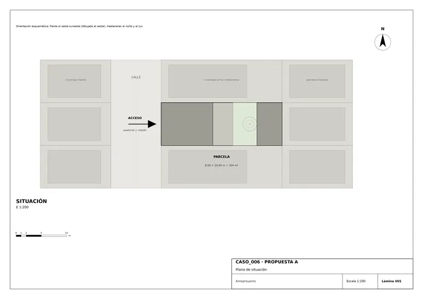
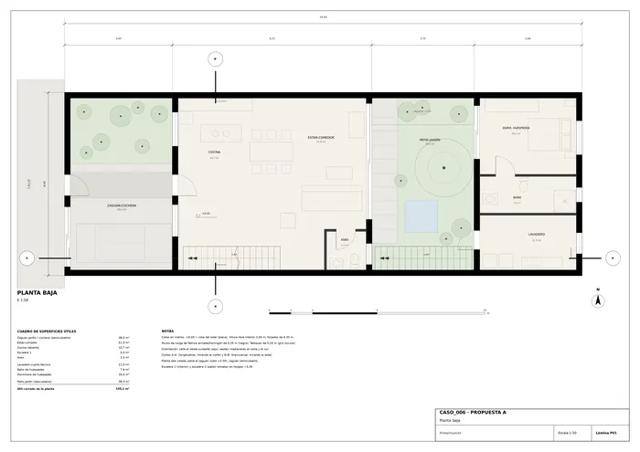
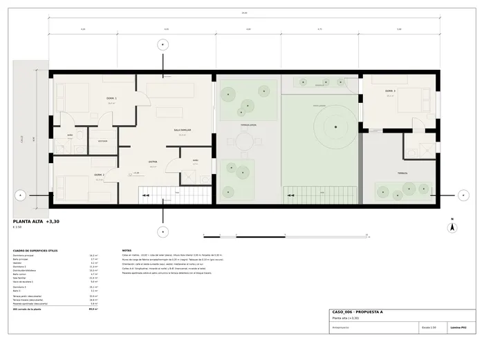
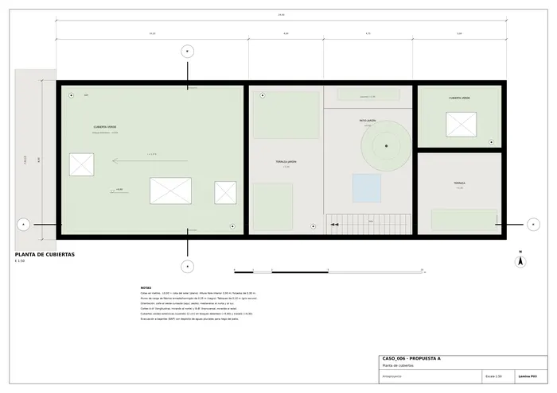
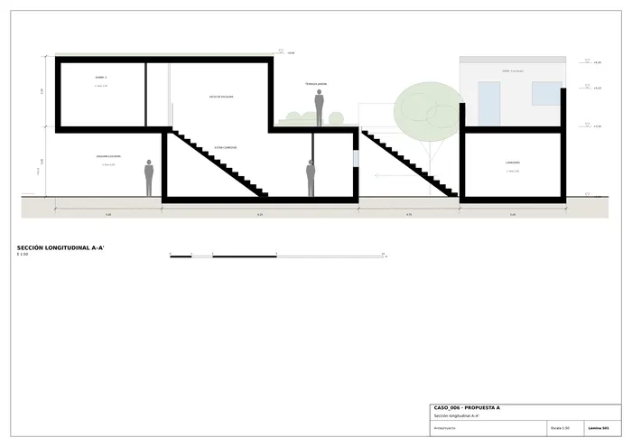
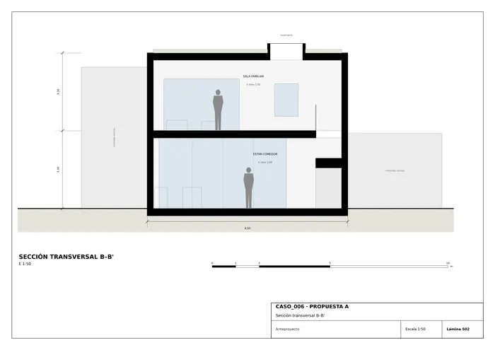
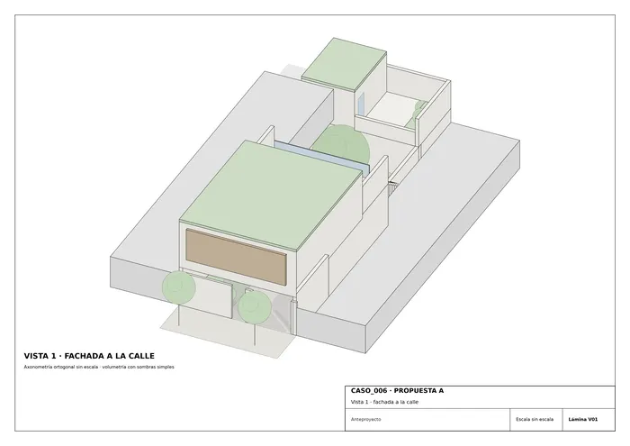
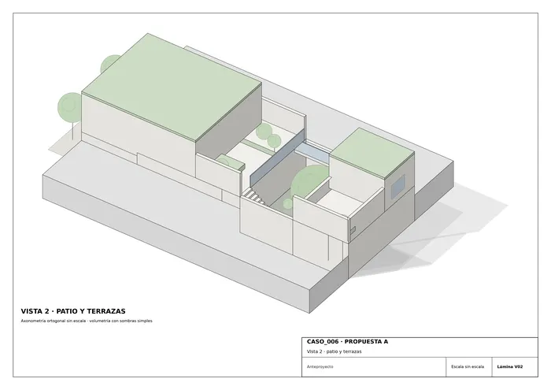

Caso 006 · AHL architects (Nguyen Manh Hung) · 2019 · vivienda unifamiliar
La parcela (8,50 × 24,00 m, 204 m²) es una banda entre medianeras con una sola cara abierta, la de la calle. La propuesta convierte el solar en un recorrido de planos desplazados y jardines intercalados: cuatro planos de distinta cota (cubierta verde delantera +6,60, terraza-jardín y pasarela +3,30, cubierta verde trasera +6,30 y suelo del patio ±0,00) unidos por dos escaleras. La vivienda se vuelca hacia dentro, a un patio-jardín central, y se cierra a la calle con un zaguán de muros y celosía de madera. No hay vistas hacia los vecinos: todas las aperturas miran al patio, a las terrazas o a la calle filtrada.
El boceto muestra cuatro planos alargados, desplazados y a distintas alturas, unidos por dos tramos de escalera, con trazo verde. Se han tomado literalmente: los cuatro planos son las cubiertas y terrazas ajardinadas, y las dos escaleras (una interior y otra al aire libre en el patio) son los dos tramos que los conectan. El «prisma de contorno» pasa a ser el volumen contenido por las medianeras. El verde del boceto se traduce en cubiertas vegetales y patio. Se añade una pasarela ajardinada que cierra el recorrido en circuito.
| Concepto | m² |
|---|---|
| Útil cerrado planta baja | 105,1 |
| Útil cerrado planta alta | 89,0 |
| Útil cerrado total | 194,1 |
| Construida cerrada (con muros) | ≈ 232 |
| Zaguán-cochera semicubierto (computado al 50 %) | ≈ 21 |
| Construida computable | ≈ 253 (en el límite inferior del rango 250-420) |
| Exteriores vegetados/pavimentados descubiertos: patio 38,0; terraza-jardín 32,0; terraza trasera 16,6; pasarela 5,9 | 92,5 |
| Cubiertas verdes (delantera 87 + trasera 19) | ≈ 106 |
Ocupación en planta baja: el patio y el zaguán dejan ≈ 43 % de la parcela libre de edificación cerrada. Hipótesis normativas (no constan en el encargo): altura máxima 7 m a cumbrera, ocupación libre al 100 % con patio mínimo del 25 %.

U01 · Plano de situación
P01 · Planta baja
P02 · Planta alta (+3,30)
P03 · Planta de cubiertas
S01 · Sección longitudinal A-A'
S02 · Sección transversal B-B'
V01 · Vista 1 · fachada a la calle
V02 · Vista 2 · patio y terrazasMemoria de la propuesta tal como la entregó el sistema. Se han omitido las notas internas del proceso (revisiones, control de reconocimiento y referencias a archivos de trabajo).